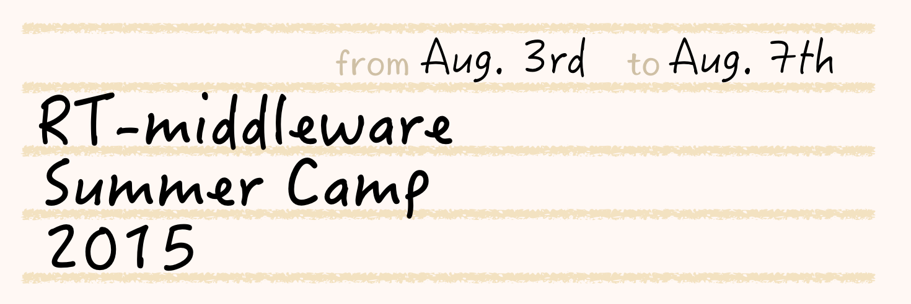

RTミドルウェアサマーキャンプ2015

✏️ Edit this page on GitHub

#contents
開催報告
名城大学の大原先生のご尽力と多くの特別講師やサポートスタッフのご支援のおかげで、社会人7名を含む20名の参加者と共に、今年も、サマーキャンプを作り上げて行くことが出来ました。皆さまに御礼申し上げます。 この合宿研修の成果を、RTミドルウエアコンテストで発表いただけることを、期待しております。
{kind=link}
参加者の声
- OpenRTMを学び始めたばかりで最初不安がありましたが、問題が発生したら講師陣にすぐに聞くことができるので安心して課題に取り組めました。 学び始めた人や一人で学んでいる人たちこそ、参加すれば多くのことを学べると思います。(社会人)
- ロボットを動かすなんて、やけに難しそうに思えていましたが、サマーキャンプに参加してRTMのすごさを知りました。 実際に、ソフトをさわり、ハードを動かすという一連の流れがワンパックになっていて、ロボットが動いたときは感動しました。 また、RTMはオープンソースで、だれでも利用でき、サンプルが豊富で、ネットですぐ手にすることができるところは、初心者にとって大変ありがたいことです。 RTMは、これからロボットを始めてみようとするロボットファンの多くの人に知ってもらいたいですね。（社会人）
- RTミドルウェアサマーキャンプでは，非常に充実した5日間を過ごすことができました．スタッフの皆様，参加者の皆様に感謝申し上げます． RTMに興味を持っている方々に，サマーキャンプへの参加を，お勧め致します．（社会人）
- RTミドルウェアを学ぼうとしている人たちが集まり、5日間それに皆が向かっているため講習の時はもちろん、それ以外でも非常に多くのことを学ぶことができました。
また、参加前までは5日間は長いな、と思っていましたが作業に取り組んでいるとすぐに終わってしまいました。時間が短く感じるほどRTミドルウェアに取り組むことができる環境を提供してくださった講師陣、参加者に心より感謝を申し上げます。
今回東海地方より参加させていただきましたが宿泊施設もとてもきれいに整っていたため遠方の方でも参加をお勧めします。(社会人)
開催要旨
本サマーキャンプでは、RTミドルウエアやロボット開発に精通する講師陣のもとで、RTミドルウエアを用いた様々なロボットシステム開発を体験する機会を提供します。この企画により、一緒に参加した仲間とともに密度の濃い開発経験を通して、より実践的なロボットシステム構築方法を身に付けることを目的としています。
共同開催
- 産業技術総合研究所 知能システム研究部門
- 計測自動制御学会SI部門 RTシステムインテグレーション部会
- ロボットビジネス推進協議会
日時・場所
- 2015年8月3日（月）～8月7日（金）
- 産業技術総合研究所 つくばセンター中央第二 本部・情報棟１階 ネットワーク会議室
- 参加者: 20名（+講師・スタッフ 延べ27名）
参加資格
- RTミドルウェア講習会に参加したことがある，もしくは同等程度の経験を有していること．
または，
- 下記のサマーキャンプ受講希望者向けの講習会に参加する意思があること
- ROBOMECH2015講習会(終了)
- RTM強化月間：6月下旬から7月の間に東京（2回）、名城大（1回）講習会を開催予定
参加費
無料（ただし，宿泊費や食事代は参加者の自己負担．産総研の宿泊施設を安価で提供）
（参考）
プログラム
| 8月3日(月) | 第1日目 | - |
| 12:30 - 13:00 | 受付 | - |
| 13:00 - 13:10 | 開催の挨拶 | 原 功 (産業技術総合研究所) |
| 13:10 - 14:30 | 自己紹介・決意表明 | - |
| 14:30 - 14:40 | RTミドルウェアサマーキャンプガイダンス | 大原 賢一 (名城大学) |
| 14:40 - 14:50 | RTミドルウェアサマーキャンプの過ごし方 **講義資料**:2015SummerCamp-01.pdf |
二井見博文（産業技術短期大学） |
| 14:50 - 15:10 | RTミドルウェアの産業応用 **講義資料**:2015SummerCamp-02.pdf |
琴坂信哉（埼玉大学） |
| 15:10 - 15:20 | 休憩 | - |
| 15:20 - 16:20 | SysMLを用いたシステムモデルの構築実習 | 坂本 武志 (グローバルアシスト) |
| 16:20 - 17:50 | 産総研見学会 | 原 功 (産業技術総合研究所) |
| 18:00 - | 懇親会＠さくら館 | - |
| 8月4日(火) | 第2日目 | - |
| 09:00 - 9:20 | ChoreonoidとOpenHRIを用いたシステム構築 **講義資料**:2015SummerCamp-03.pdf |
原 功(産業技術総合研究所) |
| 9:20 - 9:40 | MobileRobotNavigationFrameworkの紹介 **講義資料**:2015SummerCamp-04.pdf |
菅佑樹(SugarSweetRobotics) |
| 9:40 - 10:00 | DARPA Robotics Challenge におけるChoreonoidとRT-Middlewareの活用 **講義資料**:2015SummerCamp-05.pdf |
中岡慎一郎 (産業技術総合研究所) |
| 10:00 - 10:20 | rtshell入門 **講義資料**:2015SummerCamp-06.pdf |
ジェフ ビグス (産業技術総合研究所) |
| 10:20 - 10:40 | 休憩 | - |
| 10:40 - 11:00 | ロボカップにおけるRTミドルウェアの運用事例 **講義資料**:2015SummerCamp-07.pdf |
岡田浩之 (玉川大学) |
| 11:00 - 11:20 | ROSとRTMの相互運用 **講義資料**:2015SummerCamp-08.pdf |
岡田 慧 (東京大学) |
| 11:20 - 11:40 | RTミドルウェアコンテスト必勝法 **講義資料**:2015SummerCamp-09.pdf |
佐々木毅（芝浦工業大学） |
| 11:40 - 12:00 | RTコンポーネント開発の注意点 **講義資料**:2015SummerCamp-10.pdf |
大原 賢一 (名城大学) |
| 12:00 - 13:00 | 昼休み | - |
| 13:00 - 16:30 | モデリングおよび実習 | - |
| 16:30 - 17:00 | モデリング結果発表・講評 | - |
| 8月5日(水) | 第3日目 | - |
| 09:00 - 16:30 | 実習 | - |
| 16:30 - 17:00 | 各チームの進捗報告 | - |
| 8月6日(木) | 第4日目 | - |
| 09:00 - 16:30 | 実習 | - |
| 16:30 - 17:00 | 各チームの進捗報告 | - |
| 8月7日(金) | 第5日目 | - |
| 9:00 - 12:00 | 実習 | - |
| 13:00 - 16:00 | 成果報告会 | - |
| 16:00 - 16:10 | 閉会の挨拶 | - |
| 16:10 - 17:00 | 片付け | - |
| 17:00 - 20:00 | RTミドルウェア情報交換会（BOFミーティング） | - |
課題について
基本的には各参加者に課題を持ち寄っていただき，講師陣は参加者のサポートを行う形態を取ります．~
実行委員会
| 実行委員長 | 原 功 | 産業技術総合研究所ロボットイノベーション研究センター ロボットソフトウェア研究ラボ ラボ長 | |
| 幹事 | 大原 賢一 | 名城大学理工学部メカトロニクス工学科 准教授 | |
| 委員 | 安藤 慶昭 | 産業技術総合研究所ロボットイノベーション研究センター ロボットソフトウェア研究ラボ 主任研究員 | |
| 委員 | 菅 佑樹 | 株式会社SUGAR SWEET ROBOTICS | |
| 委員 | ジェフ ビグス | 産業技術総合研究所ロボットイノベーション研究センター ロボットソフトウェア研究ラボ 主任研究員 | |
| 委員 | 平井 成興 | 千葉工業大学未来ロボット技術研究センターfuro副所長 | |
| 委員 | 神徳 徹雄 | 産業技術総合研究所イノベーション推進本部 | |
| 委員 | 坂本 武志 | 株式会社グローバルアシスト | |
| 委員 | 岡田 慧 | 東京大学大学院情報理工学系研究科知能機械情報学専攻准教授 | |
| 委員 | 岡田 浩之 | 玉川大学工学部機械システム学科教授 | |
| 委員 | 琴坂 信哉 | 埼玉大学理工学研究科人間支援・生産科学部門准教授 | |
| 委員 | 佐々木 毅 | 芝浦工業大学デザイン工学部エンジニアリングデザイン領域准教授 | |
| 委員 | 中岡 慎太郎 | 産業技術総合研究所知能システム研究部門ヒューマノイド研究グループ主任研究員 |
講義資料
RTミドルウェアサマーキャンプの過ごし方
RTミドルウェアの産業応用
ChoreonoidとOpenHRIを用いたシステム構築
MobileRobotNavigationFrameworkの紹介
DARPA Robotics Challenge におけるChoreonoidとRT-Middlewareの活用
rtshell入門
ロボカップにおけるRTミドルウェアの運用事例
ROSとRTMの相互運用
RTミドルウェアコンテスト必勝法
RTコンポーネント開発の注意点
開発成果
&aname(summercamp2015_group1);
グループ１
- 課題: 拭き掃除ロボット
- 机の上の任意の位置にある汚れをKinectを用いて検知して，ロボットアームOROCHIを制御して拭き掃除を行う．
- 入力画像に対して画像処理を施し，アームを基準とした汚れ位置の相対座標を出力する画像処理RTC群．
- 受け取った汚れ位置の座標までアームを移動させ，そこで机を拭く動作をさせるアーム制御RTC群．
- プロジェクトページ: http://openrtm.org/openrtm/ja/project/SummerCamp2015_group1
&aname(summercamp2015_group2);
グループ２
- 課題: パスタ巻きロボット
- ミドルウェアサマーキャンプ2015で製作した作品
- パスタ用食事支援ロボット
- フォークの付いたアームでパスタをすくい取り，スプーンの上で巻き，口元まで運ぶシステム
- プロジェクトページ: http://openrtm.org/openrtm/ja/project/SummerCamp2015_group2
&aname(summercamp2015_group3);
グループ３
- 課題: Ball Chaser
- 遠隔操縦ロボット：ジョイスティックの操作により、独立2二輪型台車による移動とグリッパーの開閉ができる
- カメラからの画像入力により、ボールの認識ができる
- プロジェクトページ: http://openrtm.org/openrtm/ja/project/SummerCamp2015_group3
&aname(summercamp2015_group4);
グループ４
- 課題: 配送ロボット
- レーザーレンジファインダを用いた地図作成および経路生成
- 再利用性の高いデータ型変換コンポーネント
- プロジェクトページ: http://openrtm.org/openrtm/ja/project/SummerCamp2015_group4
&aname(summercamp2015_group5);
グループ５
- 課題: SEED用遠隔操作システム
- SEED(ロボット)を仮想ジョイスティックで遠隔操作する
- Kinectから人を認識しその人のもとに移動する。
- プロジェクトページ: http://openrtm.org/openrtm/ja/project/SummerCamp2015_group5
{kind=link}
{kind=link}
{kind=link}
{kind=link}
{kind=link}
{kind=link}
{kind=link}
{kind=link}
{kind=link}